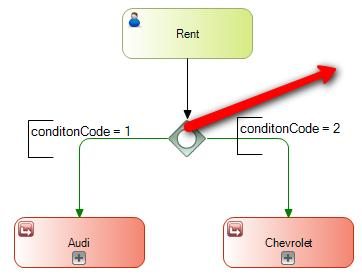
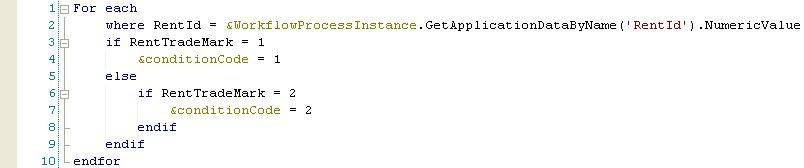

ScopeBusiness Process Diagram Symbols: Exclusive Gateway Inclusive Gateway Sequence Flow Connectors (Conditional) PurposeIt defines which paths are to be followed using a procedure. It is necessary to define the value of each edge and based on what the procedure returns; the process will follow one or more conditional routes. StructureThe procedure associated to a conditional must have the following parm rule: parm( in:&WorkflowProcessDefinition, in:&WorkflowProcessInstance, in:&WorkflowWorkitem, out:&conditionCode) Where: &WorkflowProcessDefinition is a WorkflowProcessDefinition data type variable &WorkflowProcessInstance is a WorkflowProcessInstance data type variable &WorkflowWorkitem is a WorkflowWorkitem data type variable &conditionCode Numeric(4) variable. If the conditional procedure is assigned to a Conditional Sequence Flow Connector, this value is restricted to 0 or 1 (False or True). ExampleGiven a car rental process, it is specified which car brand you want to rent. Then it is evaluated by a procedure, if the mark is AUDI or CHEVROLET and the process corresponding to each brand will continue the execution.  
|
| Backlinks |
| My first BPM Application for Smart Devices |